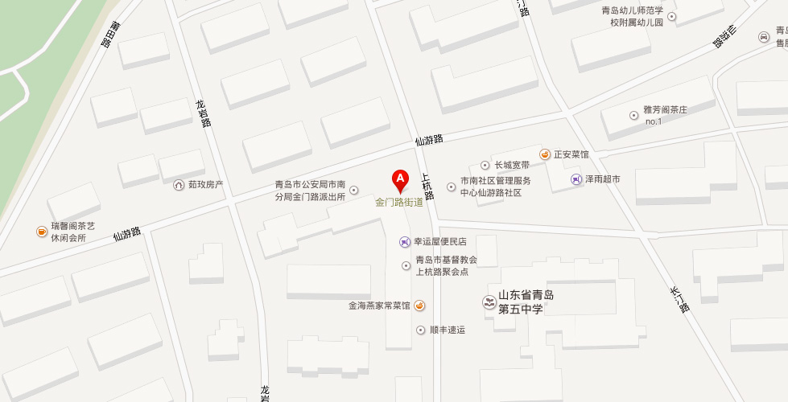

【地址】青岛市市南区仙游路3号甲
【概况】位于市南区东部，东与崂山区相邻，北以浮山顶为界与市北区相连，南以香港中路与珠海路街道为界，西与香港中路街道和八大湖街道以江西路和福州路为界。面积4.22平方千米。辖8个社区。办事处驻仙游路社区。
【沿革】1984年9月成立辛家庄街道。1996年，面积7.4平方千米，人口4.9万人，辖辛家庄第一、第二、第三、第四、第五、大尧、逍遥、 屏东路第一、第二、台北路、花莲路、高雄路、长汀路第一、第二、金门路、龙岩路第一、第二、南平路、上杭路、福清路、三小区A片第一、第二、三小区B片第一、第二、第三、三小区C片第一、第二、工疗、四小区甲区、D区、澄海路、台湾路、汕头路33个居委会和北海船厂等10个家委会。
1998年12月，将原辛家庄街道划为金门路、珠海路2个街道，部分区域划归现香港中路街道。金门路街道是以辖区主要道路金门路而命名，办事处驻仙游路3号。2005年末，辖9个社区，常住人口8万余人。
【2011年代码及城乡分类】370202013：～001 111仙游路社区 ～002 111高雄路社区 ～007 111逍遥社区 ～011 111三明路社区 ～012 111大尧社区 ～013 111银川西路社区 ～014 111天山社区 ～017 111漳州路社区
【高雄路社区】2004年8月，屏东路、台北路、香港中路3个社区合并为高雄路社区。位于市南区东部，东界：北起高雄路与宁夏路交叉路口，沿宁夏路向东南至宁夏路与香港中路交叉路口；南界：东起宁夏路与香港中路交叉路口，沿香港中路向西至香港中路与江西路交叉路口；西界：南起香港中路与江西路交叉路口，沿高雄路向东北至高雄路与宁夏路交叉路口（该区域为三角区域）。面积0.52平方千米。2005年末，常住人口3606户10596人。居委会驻屏东路7号。
【仙游路社区】2001年3月，长汀路、龙岩路、金门路3个居委会合并为仙游路社区。2002年4月，将龙岩路以西的19栋楼划出，接收青岛大学家委会23栋楼、党校宿舍家属楼6栋。位于市南区东部，背靠北山公园，东邻青岛大学。东界：北起蒲田路与宁夏路交叉路口，沿宁夏路向东南至宁夏路与高雄路交叉路口；南界：东起宁夏路与高雄路交叉路口，沿高雄路向西南至高雄路与南平路交叉路口；西界：南起高雄路与南平路交叉路口，沿南平路向西北至南平路与龙岩路交叉路口，沿龙岩路向北至蒲田路与龙岩路交叉路口；北界：西起龙岩路与蒲田路交叉路口，沿蒲田路向东北至宁夏路与蒲田路交叉路口。面积0.4平方千米。2005年末，居民2056户5100余人。居委会驻上杭路3号甲。
【上杭路社区】2004年8月，金门路、上杭路2个社区合并为上杭路社区。位于市南区东部，金门路街道西南部。东界：北起蒲田路与龙岩路交叉路口，沿龙岩路向南至龙岩路与南平路交叉路口，沿南平路向东南至南平路与高雄路交叉路口；南界：东起高雄路与南平路交叉路口，沿高雄路向西南至高难路与江西路交叉路口；西界：南起高雄路与江西路交叉路口，沿江西路向西北至江西路与古田路交叉路口；北界：东起江西路与古田路交叉路口，沿古田路向东北至古田路与逍遥二路交叉路口，沿逍遥二路向东南至逍遥二路与蒲田路交叉路口，沿蒲田路向东北至蒲田路与龙岩路交叉路口。东与仙游路社区相隔；北与三明路社区相靠；南与高雄路相望；西与江西路相隔。面积0.32平方千米。2005年末，人口2345户6230人。居委会驻江西路160号。
【三明路社区】2004年8月，三明路社区和逍遥三路社区的燕儿岛路东南区域合并为三明路社区。位于市南区东部，北山公园西侧。东界：北起蒲田路与宁夏路交叉路口，沿蒲田路向西南至蒲田路与逍遥二路交叉路口，沿逍遥二路向西北至逍遥二路与古田路交叉路口，沿古田路向西南至古田路与江西路交叉路口；南界：东起古田路与江西路交叉路口，沿江西路向西北至江西路与燕儿岛路交叉路口；西界：南起江西路与燕儿岛路交叉路口，沿燕儿岛路向东北至燕儿岛路与宁夏路交叉路口；北界：西起燕儿岛路与宁夏路交叉路口，沿宁夏路向东南至宁夏路与蒲田路交叉路口。因办公房外形结构象一个蘑菇，被居民形象地称为“蘑菇亭”，其主要道路有三明路、三明南路、三明北路、燕儿岛路、逍遥一路、逍遥二路等。面积0.23平方千米。2005年末，人口2333户6102人。居委会驻三明路9号。
【漳州路社区】2005年8月，逍遥二路社区和大尧三路社区的大尧三路以东南区域合并为漳州路社区。位于市南区东部，东界：北起宁夏路与燕儿岛路交叉路口，沿燕儿岛路向西南至燕儿岛路与江西路交叉路口；南界：东起燕儿岛路与江西路交叉路口，沿江西路向西北至漳州路与江西路交叉路口；西界：南起漳州路与江西路交叉路口，沿漳州路向东北至漳州路与逍遥二路交叉路口，沿逍遥二路向西北至大尧三路与逍遥二路的交叉路口，沿大尧三路向东北至大尧三路与宁夏路交叉路口；北界：西起大尧三路与宁夏路交叉路口，沿宁夏路向东南至宁夏路与燕儿岛路交叉路口。面积0.13平方千米。2005年末，人口2689户7000余人。居委会驻漳州路13号。
【逍遥社区】2004年8月，逍遥社区和逍遥三路社区的燕儿岛路以西北区域合并为逍遥社区。位于市南区东部，东与燕儿岛路毗邻，南与江西路接壤，西与福州南路相邻，北与大尧路相接。主要以原逍遥村新建的逍遥花园居民小区为主。东界：北起逍遥二路与漳州路交叉路口，沿漳州路向西南至漳州路与江西路交叉路口；南界：东起漳州路与江西路交叉路口，沿江西路向西北至江西路与大尧三路交叉路口；西界：南起江西路与大尧三路交叉路口，沿大尧三路向东北至大尧三路与逍遥二路交叉路口；北界：西起大尧三路与逍遥二路交叉路口，沿逍遥二路向东南至逍遥二路与漳州路交叉路口。面积0.014平方千米。2005年末，逍遥社区，社区，主要路段有5条，社区共有居民楼66栋，187个单元， 2748户，居民人口5628人。居委会驻逍遥三路16号。
【大尧社区】2004年8月，大尧、大尧一、大尧二、大尧三4个社区合并为大尧社区。位于市南区东部。东界：北起宁夏路与大尧三路交叉路口，沿大尧三路向东南至大尧三路与江西路交叉路口；南界：东起大尧三路与江西路交叉路口，沿江西路向西至江西路与福州北路交叉路口；西界：南起江西路与福州北路交叉路口，沿福州北路向北至福州北路与宁夏路交叉路口；北界：西起福州北路与宁夏路交叉路口，沿宁夏路向东至宁夏路至大尧三路交叉路口。面积0.7平方千米。2005年末，人口6159户16477人。居委会驻大尧二路10号。
【天山社区】2004年8月，宁国路、安庆路2个社区合并为天山社区。位于市南区东部宁夏路中段，北与市北区毗邻。东界：北起银川西路与市北区界交界点，沿银川西路向西北至银川西路与宁夏路交叉路口；南界：东起银川西路与宁夏路交叉路口，沿宁夏路向西至宁夏路与福州北路交叉路口；西界：南起宁夏路与福州北路交叉路口，沿福州北路向西北至福州北路与延吉路路口中心点北100米处与市北区区界交界点；北界：西起福州北路与延吉路路口中心点北100米处与市北区区界交界点，沿市北区区界向西至银川西路与市北区界交界点。面积约1.07平方千米。2005年末，人口4339户约12000余人。居委会驻宁国二路9号。
【银川西路社区】居委会成立于2000年6月。位于市南区东部。东界：北起浮山坛顶子山顶，沿崂山区界向南至宁夏路与崂山区界交界点；南界：东起宁夏路与崂山区界交界点，沿宁夏路向西至宁夏路与银川西路交叉路口；西界：南起宁夏路与银川西路交叉路口，沿银川西路向北至银川西路与崂山区界交界点；北界：西起银川西路与崂山区界交界点，沿崂山区界向东至宁夏路与崂山区界交界点。面积1.8平方千米。2005年末，人口1918户6000余人。居委会驻宁夏路274号。